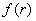
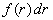
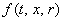
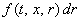
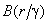
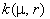
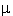
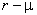

|
В разделе "Математическая модель процесса массовой кристаллизации из
растворов - пример системы интегро-дифференциальных уравнений" мы рассматривали математическую модель,
в которую помимо дифференциальных уравнений также входят интегро-дифференциальные уравнения,
то есть уравнения, содержащие как производные, так и интегралы.
Интегро-дифференциальные уравнения могут встречаться в любых моделях,
описывающих полидисперсные гетерогенные среды, состоящие из сплошной фазы (газ или жидкость) и
дисперсной фазы (включения твёрдых частиц, капель жидкости или газовых пузырьков). Скорости процессов,
протекающих с участием дисперсной фазы, зависят, как правило, от размера включений. Чтобы это учесть при записи уравнений
математической модели, всю дисперсную фазу рассматривают как совокупность r-фаз.
Каждая r-фаза состоит из включений, размеры (объёмы) которых изменяются от r - dr до r + dr.
Таким образом, в каждой из r-фаз размеры (объёмы) включений остаются постоянными,
меняется только их число. Дисперсность гетерогенной фазы характеризуется функцией распределения
включений по размерам ,
так что  - число включений, размеры (объёмы)
которых находятся в интервале значений от r до r + dr. Отметим, что значение
может быть функцией как времени,
так и пространственных координат, поэтому в общем случае рассматривают функцию ;
тогда  - число включений в момент времени t в точке x реактора, размеры которых находятся
в интервале значений от r до r + dr. Уравнения, описывающие законы
сохранения массы, импульса и энергии для всей дисперсной фазы, получают путём интегрирования
соответствующих уравнений, записанных для r-фазы.
Примерами интегро-дифференциальных уравнений (помимо рассмотренных выше уравнений математической модели
процесса массовой кристаллизации из растворов) могут служить следующие уравнения:
уравнение, описывающее дробление включений
уравнение, описывающее агломерацию твёрдых частиц или коагуляцию капель
Здесь v - скорость перемещения включений;
A( r) - функция, характеризующая вероятность дробления включений размером r;
 - функция, характеризующая вероятность дробления включений размером
 с образованием включений размером r;
 - функция, характеризующая вероятность
агрегации включений размерами  и r.
Первое слагаемое в правой части уравнения (14.1) описывает
уменьшение числа включений r-фазы за счёт их дробления; второе слагаемое характеризует
увеличение числа включений r-фазы за счёт дробления более крупных включений.
Первое слагаемое в правой части уравнения (14.2)
описывает увеличение числа включений r-фазы за счёт агрегации включений с размерами
и ;
второе слагаемое характеризует уменьшение числа включений r-фазы за счёт их агрегации
со всеми остальными включениями.
|